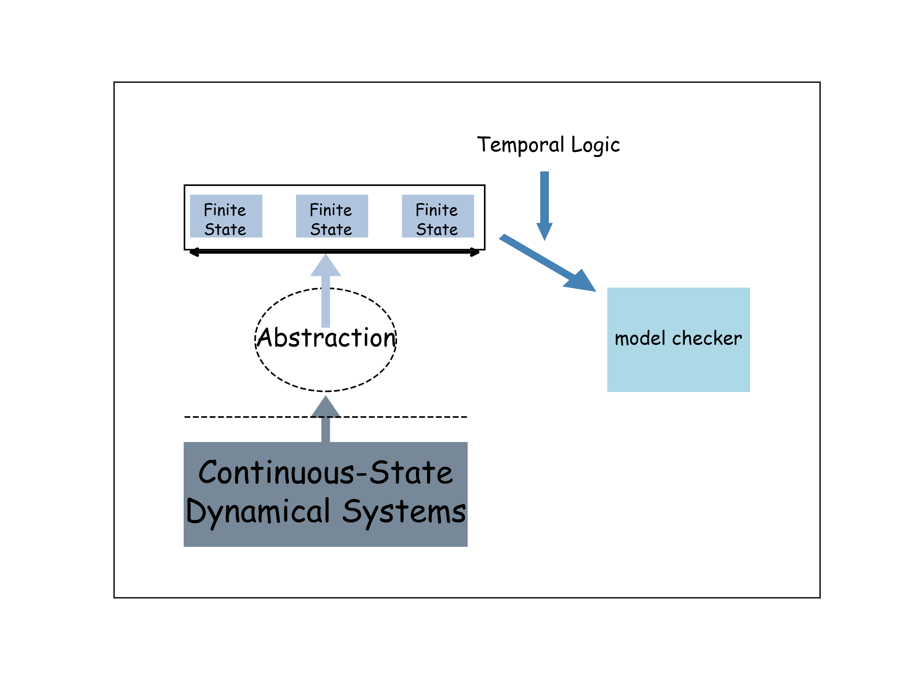
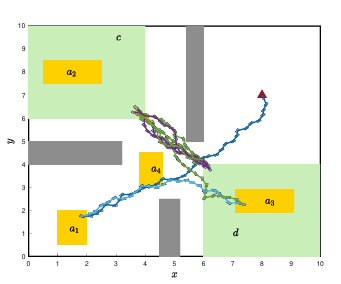
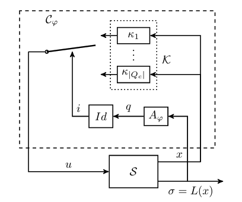

Smart Formal Symbolic Abstractions for Stochastic Systems
Abstraction-based formal synthesis relies on obtaining a finite-state abstraction (or symbolic model) of the original and possibly nonlinear systems. Computational methods, such as graph-based model checking and automaton-guided controller synthesis, are then developed based on the abstraction to verify the system or synthesize controllers with respect to a temporal logic specification. Abstractions enable autonomous decision-making of physical systems to achieve more complex tasks and have received significant success in the past decade. Regardless of heavy state-space discretization and complicated abstraction analysis, formal methods compute with guarantees a set of initial states from which a controller exists to realize the given specification. So far, abstraction-based formal verification and control synthesis for deterministic systems has gained its maturity. Sound and approximately complete finite (not just finite-state) abstractions can be achieved.

However, to determine the “size” of the abstractions for stochastic systems, we need to work on the weak* topology of the solution processes (here, we treat the solutions as functionals rather than absolute continuous functions). The obtained abstractions based on the state-space discretization are essentially a family of “discrete-version” transition kernels of the original systems. However, there are uncountably infinite of them, which is why we name it a “finite-state” abstraction. To prevent a sound stochastic abstraction from generating significant deviation, we perform a completeness analysis. The purpose is to investigate whether such deviations can be reflected in some continuous-state systems with arbitrarily small perturbations when compared to the original concrete systems. By conducting this type of comparison, we aim to release the abstraction from the “virtual” systems and establish a perception that even small deviations would not lead to substantial issues for the original system.


Develop task and system-oriented adaptive discretization techniques to enhance computation efficiency.
Integrate reinforcement learning algorithms for control synthesis.
Structure-aware framework of real-time construction of abstraction
Robustly Complete Finite-State Abstractions for Verification of Stochastic Systems.
Y. Meng, J. Liu.
Formal Modeling and Analysis of Timed Systems International Conference (FORMATS). @ Warsaw, Poland, 2022. (DOI)Robustly Complete Finite-State Abstractions for Control Synthesis of Stochastic Systems.
Y. Meng, J. Liu.
IEEE Open Journal of Control Systems, 2023. (DOI)